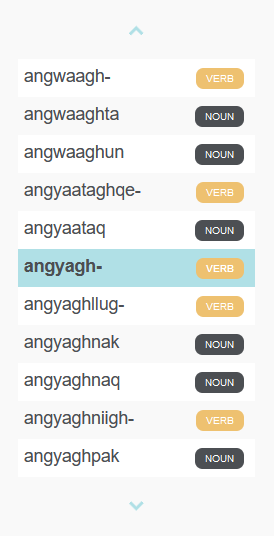

Akuzipigestun Sangaawa
A dictionary for St. Lawrence Island Yupik
This site is an implementation of an existing print dictionary for St. Lawrence Island Yupik/Akuzipik. The source dictionary is the culmination of many years of diligent documentary work by Linda Womkon Badten (Aghnaghaghpik), Vera Oovi Kaneshiro (Uqiitlek), Marie Oovi (Uvegtu), Christopher Koonooka (Petuwaq) and Steven A. Jacobson, first published in 1987 and most recently revised in 2008. This electronic dictionary presents the information compiled in Badten et al (2008) and preserves all lexical entry data contained therein in a searchable digital database.
The implementation of this electronic dictionary, as well as the accompanying work on Akuzipik that our team has engaged in, has been undertaken with ongoing discussions with rights holders in the Akuzipik-speaking community in the village of Sivuqaq (Gambell). This work is part of a larger project that includes documentation, digitization, building computer tools for the use of speakers and scholars, and supporting revitalization and pedagogical efforts in the community.
Igamsiqayugvikamsi to all the Yupiget who have used and provided feedback about the online dictionary in its various forms. Any mistakes herein or in the online implementations of the dictionary are entirely our own.
This dictionary integrates a morphological
The Word Wheel is located to the right of the main entry section and contains an alphabetized list of all entries in the dictionary. The current entry is centered and highlighted when the page is first loaded and other entries can be accessed by clicking on any word visible in the wheel. Other entries can be viewed by scrolling up or down on the Word Wheel using the arrow buttons on the top and bottom of the wheel.
If you have any suggestions for improvements to the dictionary, additions or corrections to existing entries, or Akuzipik words or phrases that we don't have record of, please submit this information using the form on the contact page.
Igamsiqayugvikamsi!